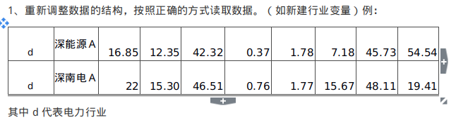
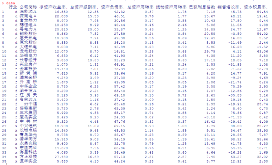
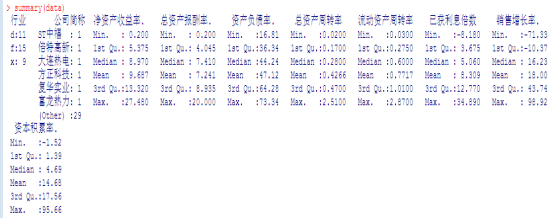
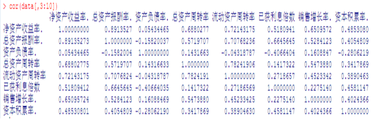
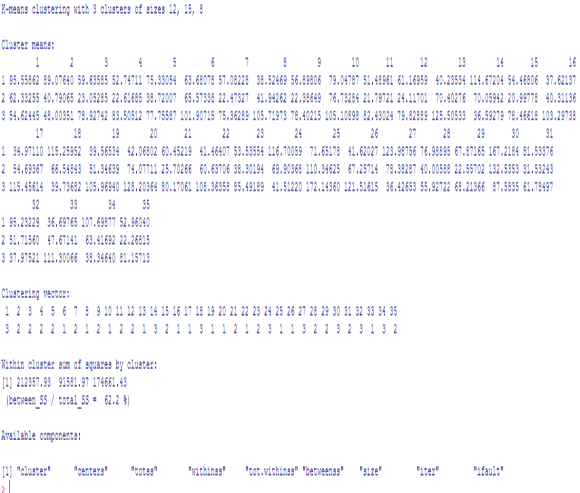

实验内容
实验目的：
综合利用R语言进行数据分析
实验项目名称：
1.应用R语言对附件1中的数据进行分析，并给出分析结果。
要求：
1、重新调整数据的结构，按照正确的方式读取数据。（如新建行业变量）
例：

2.对各行业进行基础性统计分析，需要对比各行业对应指标的异同，用图表的方式呈现。
3.计算各指标的相关系数，说明哪些指标具有高相关性。
4.对所有行业数据进行聚类分析，确定分类结果并做简单分析，如利用聚类结果与行业对比，说明聚类结果是否和行业因素相关。
5.做出简单的统计分析报告，报告中需要包括但不限于以上要求的内容。
附加题：
1.构建一个判别模型，以确定新的公司的类别.（类别可为行业，也可用要求4中的聚类结果，自选你认为合理的）
统计分析报告
1.首先将数据导入Excel并对首列进行拆分，分别以d，f，x代表电力、煤气及水的生产和供应业，房地行业和信息技术业，然后将其另存为data.csv文件。接着读取该文件，代码如下：
data=read.csv(“C:\Users\Administrator\Desktop\第四次上机\data.csv”)
读入效果如下图所示：

2.利用summary命令进行信息汇总，即 summary(data)，结果如下：

3.利用cor命令计算各个指标之间的相关系数，即cor(data[,3:10])，结果如下

由此观之，净资产收益率与总资产报酬率之间的相关系数为0.89，说明两者之间的相关程度较大。同时，流动资产周转率和总资产周转率之间也呈现出较强的相关关系。
4.首先利用dist函数计算各个样本之间的距离，即dist(data)，然后对数据进行kmeans聚类，代码如下：kmeans(distance,centers=3,iter.max=1000,nstart=111)，聚类结果如下：

从中可以看出，聚类结果和行业因素是由一定关系的。